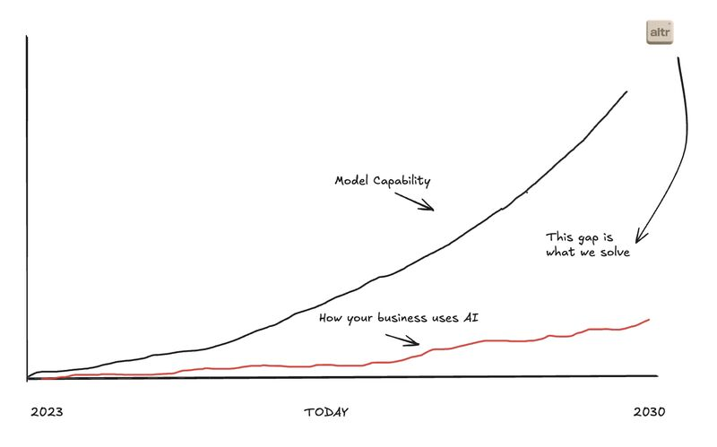
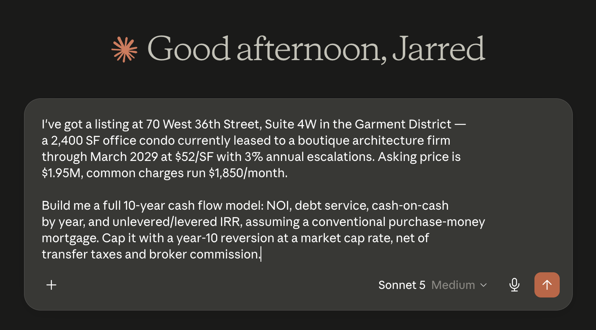
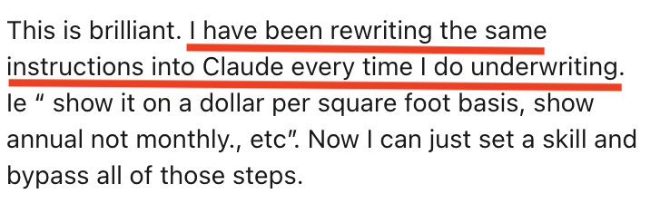
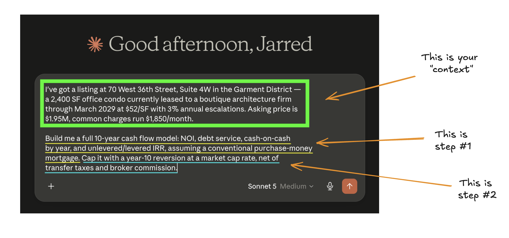

According to research from First American Data & Analytics and DealGround, 66% of CRE professionals use AI weekly or daily, but only 5% trust it enough to inform real decisions.
There is a reason for this, and this series of articles will help you understand why.
But first, why should you listen to us?
Who are we?
altr is an AI services company that helps businesses get real value out of AI.

We do this in two ways:
- Enablement: on-site work with you and your team. This helps us understand how you currently work and how we can alter processes with AI.
- Deployment: agent engineering to accomplish real work. We build custom solutions tailored to your business and the bottlenecks you currently face.
Now, let’s understand why Claude is only making 5% of decisions in CRE.
The problem
CRE teams are adopting AI at a rapid pace, but they are not using it for anything more than a first-pass underwriter and OM reviewer.
Let’s use a common example of how someone in CRE might use Claude:

There is nothing wrong with this, but it is one of the reasons CRE teams are not seeing Claude make a real impact.
In fact, I had a conversation with the principal of a firm in NYC this weekend. I have underlined our problem:

Most teams do not know about Skills.
But what is a Skill? How can I make one? Can you show me an example?
Keep reading.
Understanding Skills
Skills can be very easily defined as:
A reusable set of steps Claude takes while completing a task.
To understand this completely, let’s look back at our example.

Prompting can be defined with two variables:
- Context: information you provide Claude so it can understand a task.
- Steps: the actions you want Claude to take to complete that task.
Skills combine these two variables into a markdown file that Claude can trigger.
P.S. Markdown files are just text documents.
Creating Skills
Creating Skills is simple in Claude. Once you open the Skills area, you have three options.
Create with Claude
This is where you prompt and Claude generates the Skill for you. If you want to create an underwriting Skill, describe the workflow, the property type, the inputs it should expect, and the model you want it to deliver.
Write skill instructions
I do not recommend starting here. You have to write the instructions manually, and Claude is already capable of drafting them from a clear description of the job.
Upload a Skill
This is the option to select when you want to use a Skill someone else created. You can download our NYC office-condo underwriting Skill and walk through the process yourself.
Underwriting example
Let’s look at the nyc-office-condo-underwriting Skill to drive it home. In the markdown file, Claude follows the same sequence whenever the Skill is triggered:
- Read the OM.
- Identify what the OM does not cover.
- Confirm missing assumptions.
- Build the ten-year cash flow.
- Deliver the model.
Next steps
Hopefully by now you have learned what Skills are and how to create them for yourself.
Next, we are going to discuss how we can combine Skills with another feature in Claude so we can run the same reusable steps with applications we already use.
Stay tuned for the next part of this series on connectors.
Want this built into your workflow?
You just watched us build a working underwriting Skill, for free, in minutes.
Now imagine one tuned to your OM format, your DD checklist, and the way your team actually underwrites—not a generic template.
That means wiring Claude straight into the systems your team already runs on: RentManager, Yardi, AppFolio, CoStar, and Argus. A Skill does not just follow steps; it can pull your rent roll, check your comps, and update your deal tracker without you touching five different tabs.
That is the gap between the 66% using Claude weekly and the 5% trusting it with real decisions, and it is exactly what we close with CRE teams.
If you want that built for your firm, book a call with us.
A Skill is the difference between asking Claude to improvise an underwriting process and giving it the playbook your team already trusts.
Originally published in the altr’d newsletter on LinkedIn.